How to build an organization capable of innovating continually over time?
Neu-Ulm University of Applied Sciences
January 1, 2023
Collective genius
Leading innovation takes a distinctive kind of leadership, one that unleashes and harnesses the “collective genius” of the people in the organization. Linda A. Hill
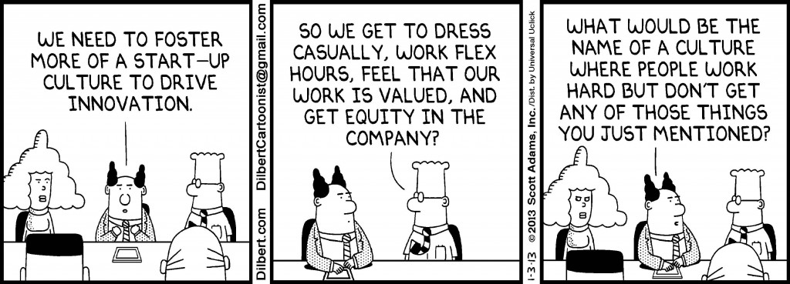
What is an innovation?
An innovation can be defined as an idea, practice, or material artifact perceived to be new by the relevant unit of adoption and offers worthwhile benefits (Dewar and Dutton 1986).
Innovations can be differentiated according to the degree of deviation from existing technologies and practices: incremental innovation and radical innovation (McDermott and O’connor 2002).
The main difference that characterizes the two dipoles is the degree of new knowledge contained in the innovation (Dewar and Dutton 1986), which implies technological uncertainty, technical inexperience, business inexperience, and technology cost.
Innovation is not about some genius having an aha moment.
Innovation
=
team sport
Competitiveness depends to a large extent on the ability to innovate.
So the ongoing challenge is to build an organisation that is able to innovate all the time.
The rhetoric of innovation is often about fun and creativity, but the reality is that innovation can be very taxing and uncomfortable, both emotionally and intellectually. Linda A. Hill et al. (2014b, p. 5)
This requires leadership—a different kind of leadership?
What does a leader needs to do to lead innovation?
The role of a leader of innovation is not to set a vision and motivate others to follow it. It’s to create a community that is willing and able to generate new ideas. Linda A. Hill et al. (2014b, p. 4)
So the question is not How do I make innovation happen? but rather, How do I set the stage for it to happen?
The paradox at the heart of innovation is the need to unleash the talents of individuals and to harness those talents in the form of collective innovation (Linda A. Hill et al. 2014a).
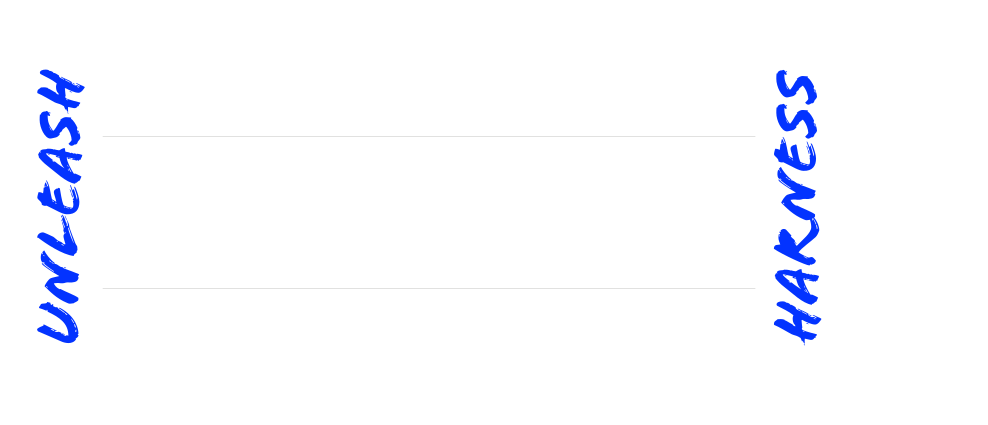
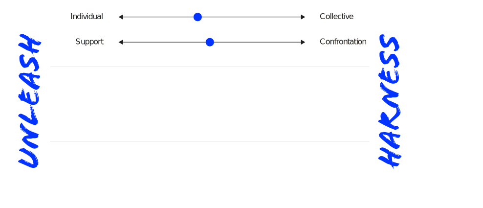
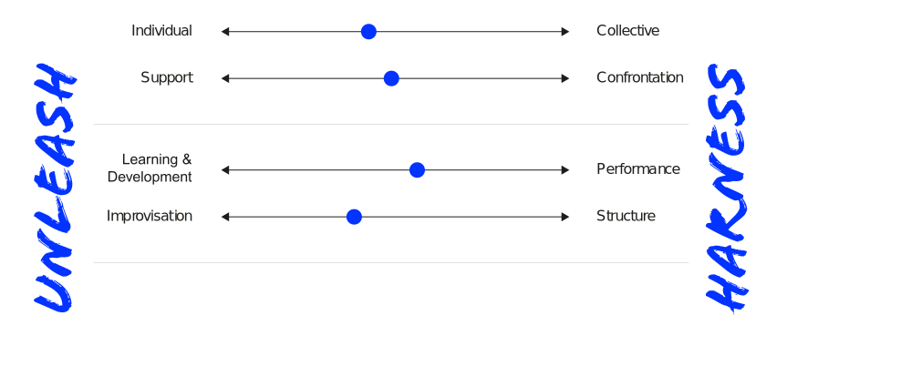
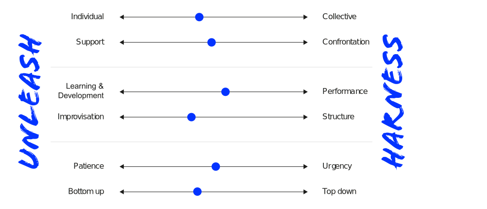
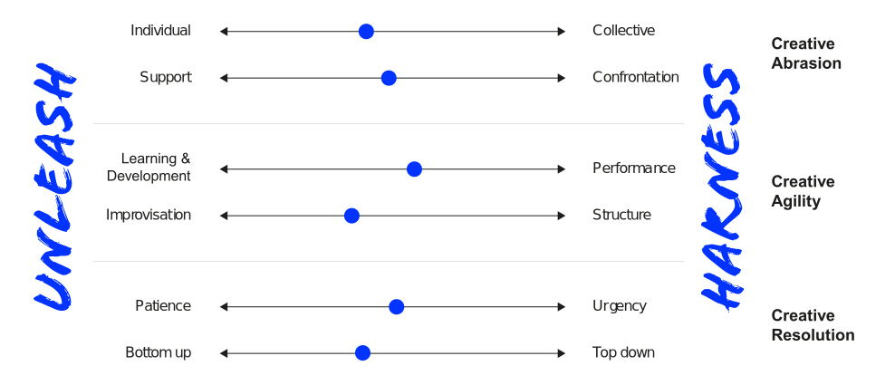
The role of an innovation leader is to create a community that is willing and able to innovate over time (Linda A. Hill et al. 2014b).
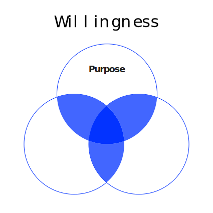
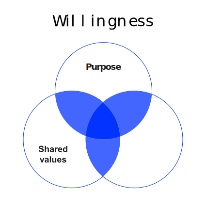
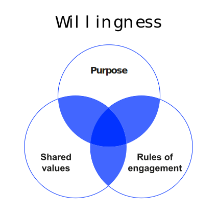
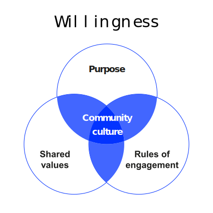
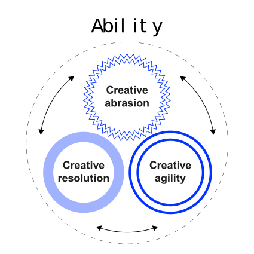
Art challenges technology. Technology challenges art.
Part of the magic of Pixar is that these two disciplines bump up against each other and create something better than either could create by itself. Greg Brandeau, Pixar Animation Studios
Pursue. Reject. Adjust.
We used to launch products in an “all or nothing” mode to all of our users. Now we had the capability to test multiple different live versions of new products on 1 percent samples of our users. This yielded huge data sets and brought with it a change in mind-set for approaching innovation. We began to avoid projects that only allowed for “zero or one” decisions, instead choosing projects that could be rolled out and evaluated in small slices. Philipp Justus, eBay Germany
From either or
to both-and thinking
We hired innovators and if I were to forbid a passionate team to do something, it really would have missused their talents. I wanted people with a vision, and the ambition to build the next great thing. We needed to let teams go far enough so they could in fact discover this great new thing. Or, in another scenario, they had to recognize it was not quite right, then decide to work on something else, in the best-case scenario integrating their knowledge to another solution. Bill Coughranm, Google
The leaders Linda A. Hill et al. (2014a) studied had some things in common — they call it the right stuff
Leaders must be patient enought to allow great ideas to emerge
Leaders must ensure a sense of urgency and clear parameters actually enable integrative decision-making
Generosity here means the willingness, based on their own sense of personal security, to share power, control and credit
This includes the willingness to admit imperpections and asking for help